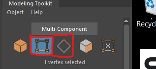
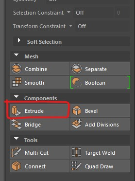
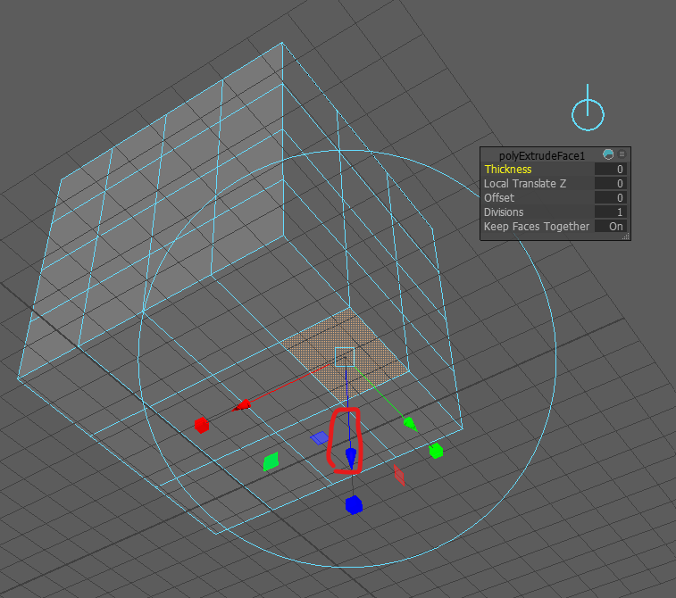
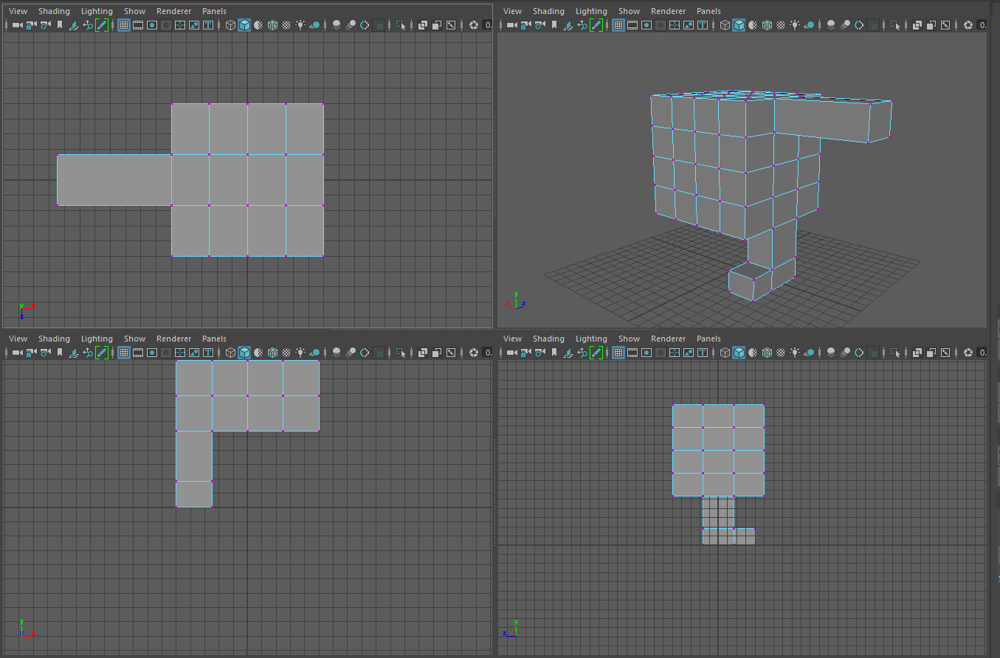
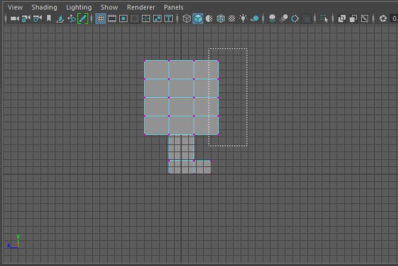
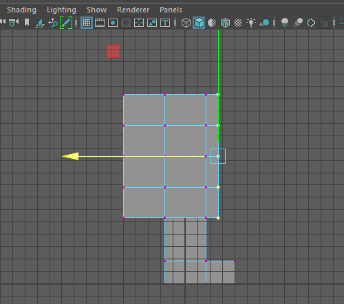
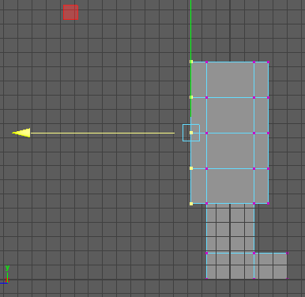

Change the values as show bellow

Press Apply
All the machines in the lab have Maya installed, if you want you use your own machine follow the installation guide.
Make sure you have a mouse, you can use Maya with a track pad but it is much harder.
This allows you to choose specific details when you create a new polygon
Change the values as show bellow
Press Apply
So far we have been manipulating whole objects. However, each polygon is made of different components that we can manipulate individually to give us more control
They are faces, Edges and Vertices
Open the modeling toolkit by press the button on the top right of the screen

Select the faces button

Click on an individual face on the cube to select it ( you can also hold shift to select multiple faces)
Use the move (shortcut w), scale(e) and rotate(r) tools to practice manipulating the face just as you did with the whole polygon.

You can undo at an point by pressing ctrl or cmd and z.
Try to do the same thing with the edge and vertex selection modes
Try to move, scale and rotate individual or groups of edges and vertices.

Select the button next button on the left to go back to selecting the whole polygons.

Delete your polygon by selecting it in the scene or in the outliner and pressing delete.
For the rest of this worksheet we will create a very simple character using the box modeling technique, starting with a simple shape we will extrude out details.
We will create one side, and then mirror it.
First create a new cube by clicking on the new cube button.

Move the cube up so that it sits above the grid, we can think of the grid as the floor.
Select the face on the bottom of the cube


In the modeling toolkit press the extrude button.

Click and drag down on the blue arrow to pull a leg shape out of the cube


Press q to quit out of the extrude tool
Next we are going to add some more edges so that we can create a foot.
In the Modeling toolkit select Multi-cut

You can use this tool to add individual edges, but we are going to add a complete edge loop.
Hold down the ctrl or cmd key and move your mouse over the leg of your character.

Left click to add an new edge loop.
Press q to quit out of the tool.
We can now extrude the foot from the leg.
Go into face selection mode.
Select the face at the bottom of the leg and extrude it out as we did before.
Remember to press q when you have finished to stop extruding.

Now extrude an arm in the same way.

We are currently looking through the perspective camera which gives us a 3D view of the character, but we can also use the orthographic views to make selecting multiple components easier.
Open up the 4 panel layout by pressing the button on the bottom left of the screen.


We can now manipulate some of the vertices and edges to improve the shape.
Go in vertex selection mode.

Draw a square around the front of the character to select all the front vertices.

Move them to create a better shape for the torso.

Do the same thing for the back of the character.

You can now go back into the perspective view by pressing the button on the left.

We can manipulate the shape further by moving some of the edges.
Go into edge mode.

Select the top of the foot and move it down.

We can clearly spend a lot of time adding more edges and manipulating them to get an increasingly complex shape but for this tutorial we will stop here.
Now that we have finished one half of our character we will mirror it.
It will make it much easier to model if our Character is centred on the grid, helpfully as we have not moved our origin cube it will be.
First we are going to delete half our model.
Go in to the 4 panel layout.
Go in Face selection mode.
Draw a rectangle around half of your model using the bottom left view.

Press Delete
You should now have half a character
Go back into perspective view.
Go into object selection mode and select your model.


To mirror, go to Mesh in the top menu and select the small square next to mirror. This is the mirror options.

Make sure your options match mine.

Press Apply
You should now have a complete character body.
Lastly we want to add a head.
We could extrude the neck and head out from the torso just as we did the legs and arms, however, in we want to add a circular head, it make sense to add it as a separate object.
Double click on the create cylinder button to open the options

Set the properties to be the same as mine. make sure you tick round cap

Positions the new shape on top of the character

If you want more practice, try to add some more detail to the character.
Add more shapes such as eyes and a hat.
Use multi-cut and extrude to add more detail.
Move the edges to create a more interesting shape.

Double click on an edge to select the whole edge loop.
When extruding, you can use the scale control to extrude along the surface.